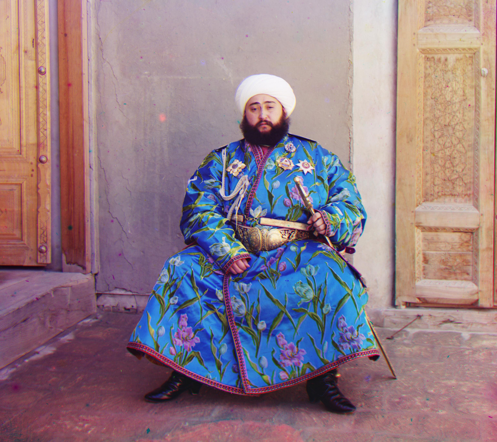
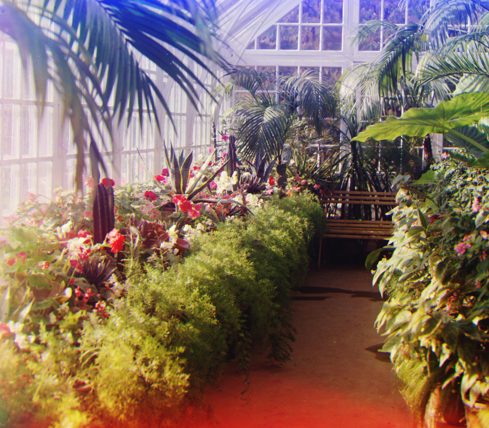

Background
As you probably know if you're reading this webpage, the main goal of this project is to take red, blue, and green filtered negatives from the early 20th century and align them into color images. Sounds simple enough, right?
The general way we do this, is to take the source plates, and create some algorithm to automatically align them. This can be accomplished by doing a grid search of possible alignments, and comparing them by some metric such as sum of squared differences. Of course, this can run into runtime issues at high resolutions, so one can use an image pyramid where the images are recursively aligned at lower resolutions, and the lower resolution alignments are used as starting points for the higher resolutions so they can be aligned over smaller (and more tractable) search spaces. And that's basically what we do here.
The small images
Throughout this project, I just used sum of squared differences on raw pixels. I was going to consider edge detection, but I got good results with SSD with some tweaking, so further exploration did not seem necessary. Some experimentation was done with sum of absolute differences to potentially ignore outliers, but it seemed to make no difference.
For the small resolution images, a very naive alignment method is used. The green and red plates are aligned by rolling them over the blue plate over a range of -30 to 30 pixel alignments, and the best alignment is found with SSD. The border edges are cropped off using a fixed 10% of image width margin, and not even the rolled-over pixels from np.roll are cropped off. Somehow, the results seem to be quite solid.
The large images
The high resolution images are much more demanding. The images are normalized by intensity before being compared with the SSD, which helped a little bit. Additionally, the rolled-over edges of the image to be aligned in the high resolution algorithm are properly taken out of SSD calculations. There are some runtime hacks such as only comparing at maximum 750,000 pixels at an image pyramid resolution. I found that the best downsample cutoff was somewhere under 256 pixels in height. For certain images such as church.tif and lady.tif, alignment was best achieved when the two highest resolution SSD passes in the image pyramid algorithm were skipped -- I suspect this is because higher alignment passes are more sensitive to small outliers from having lots of pixels to worry about.
But the biggest reason why I got good results was because instead of aligning the red and green plates to the blue plate, I aligned the red and blue plates to the green plate. That was the major change that made even the Emir image line up. Everything else helped, but this was pretty much the reason. My hypothesis is that the red and blue plates are more similar in brightness profiles to the green plate than they are to just each other. It shouldn't work this well, but it does and I find that absolutely hysterical.
Bells and Whistles
There's an autocropping algorithm that functions by polling each edge of the image at multiple locations, marching inwards until it sees two major intensity changes (a poor man's sharp derivatives, essentially), and then takes the median of the recorded values and uses those to crop off the edges. Additionally, the rolling from aligned plates is cropped off. It doesn't work perfectly all the time, given that its large derivative detection is incredibly naive and purely hard threshold based, but it functions quite decently on many images. On large images, a downscaled version of the input image is used for calculations. Below is a demonstration on the emir image.

|
 |
| Uncropped emir | Cropped emir |
The provided example images, with plate alignments
(in pixels)
The small jpg images |
||
|---|---|---|
| cathedral.jpg: red: (-4, 1), blue: (6, -2) | monastery.jpg: red: (-3, 1), blue: (12, -2) | tobolsk.jpg: red: (-6, 1), blue: (7, -3) |

{kind=link}
{kind=link}
{kind=link}
{kind=link}
{kind=link}
{kind=link}
{kind=link}
{kind=link}
{kind=link}
{kind=link}
{kind=link}
{kind=link}
{kind=link}
Selected images from the collection |
||
|---|---|---|
|  | ||
| conservatory.tif: red: (-132, 7), blue: (142, -31) | etruscan.tif: red: (-59, 8), blue: (122, -9) | roses.tif: red: (-71, 16), blue: (97, -22) |
{kind=link}
{kind=link}
{kind=link}
You made it to the end! yay!